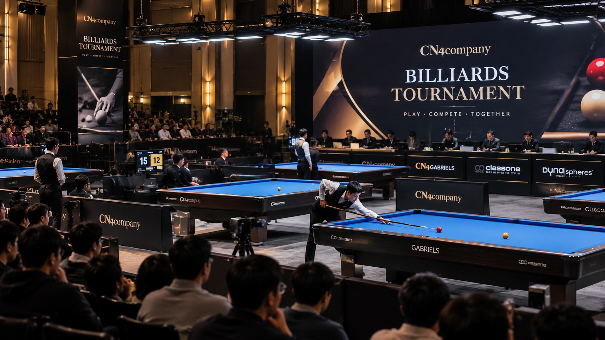
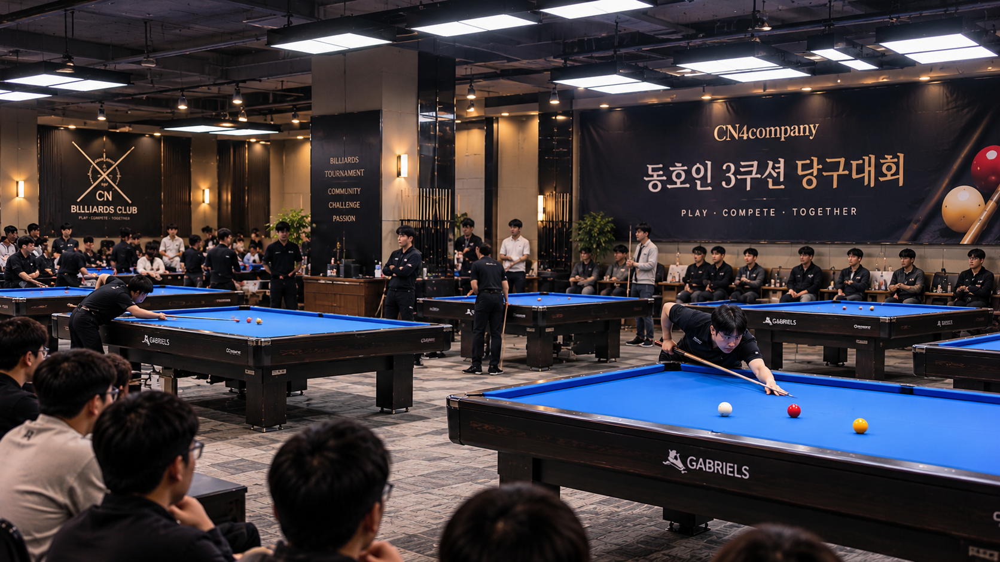

CN4 TOURNAMENT CONSULTING
자체 AI 프로그램으로,
운영은 더 간편하게.
참가자 모집부터 대진표와 경기 진행 관리까지.
당구장이 대회에 집중할 수 있도록 CN4company가 함께합니다.

OUR SERVICES
대회의 준비부터
마지막 경기까지.
HOW IT WORKS
대회 개최,
이렇게 진행합니다.
01
상담·규모 확인
장소, 당구대 수, 희망 일정, 참가 규모와 경기 규칙을 확인합니다.
02
모집·대진 구성
홍보 및 참가 신청을 지원하고 경기 운영 계획을 수립합니다.
03
경기 운영 지원
테이블 배정, 경기 진행과 결과 관리 업무를 지원합니다.
04
대회 마무리
경기 결과를 정리하고 다음 대회를 위한 개선 사항을 검토합니다.
CN4 DIGITAL TOURNAMENT SYSTEM
대회 운영의 복잡함을
하나의 흐름으로.
당구장별 테이블 수와 대회 방식에 맞춰 운영할 수 있는 자체 대회 관리 프로그램을 개발 중입니다. 서비스 제공 범위 및 현장 적용 가능 여부는 상담 시 안내드립니다.
※ 위 시스템은 개발 중이며, 실제 지원 기능은 도입 단계에 따라 달라질 수 있습니다.
BILLIARDS TOURNAMENT 01 / EVENT
THE NEXT STANDARD OF TOURNAMENTS현장의 열기는 그대로,
운영은 더 체계적으로.
운영은 더 체계적으로.
CONTACT
당구대회를 계획하고 계신가요?
함께 준비하겠습니다.
개최 장소, 예상 참가 인원, 희망 일정과 경기 방식을 알려주시면 상담을 도와드립니다.
대표 번호010-3668-0247실장 번호010-9310-0247E-MAILcn4co.official@gmail.com
ADDRESS충북 청주시 흥덕구 오송읍
오송생명로 208-8, 6층
오송생명로 208-8, 6층